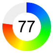
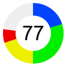
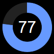
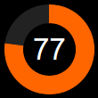
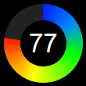
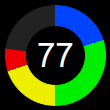

This example demonstrates circular bar meters.
A circular bar meter can be created by using an
AngularMeter in a creative way.
The following is the command line version of the code in "cppdemo/circularbarmeter". The MFC version of the code is in "mfcdemo/mfcdemo". The Qt Widgets version of the code is in "qtdemo/qtdemo". The QML/Qt Quick version of the code is in "qmldemo/qmldemo".
#include "chartdir.h"
void createChart(int chartIndex, const char *filename)
{
// The value to display on the meter
double value = 77;
// The meter radius and angle
int radius = 50;
double angle = value * 360.0 / 100;
// Create an AngularMeter with transparent background
AngularMeter* m = new AngularMeter(radius * 2 + 10, radius * 2 + 10, Chart::Transparent);
// Set the center, radius and angular range of the meter
m->setMeter(m->getWidth() / 2, m->getHeight() / 2, radius, 0, 360);
// For circular bar meters, we do not need pointer or graduation, so we hide them.
m->setMeterColors(Chart::Transparent, Chart::Transparent, Chart::Transparent);
m->setCap(0, Chart::Transparent);
//
// This example demonstrates several coloring styles
//
// Thd default fill and blank colors
int fillColor = 0x6699ff;
int blankColor = 0xeeeeee;
if (chartIndex >= 4) {
// Use dark background style
m->setColors(Chart::whiteOnBlackPalette);
blankColor = 0x222222;
}
if (chartIndex % 4 == 1) {
// Alternative fill color
fillColor = 0xff6600;
} else if (chartIndex % 4 == 2) {
// Use a smooth color scale as the fill color
int smoothColorScale[] = {0, 0x0022ff, 15, 0x0088ff, 30, 0x00ff00, 55, 0xffff00, 80,
0xff0000, 100, 0xff0000};
const int smoothColorScale_size = (int)(sizeof(smoothColorScale)/sizeof(*smoothColorScale));
fillColor = m->getDrawArea()->angleGradientColor(m->getWidth() / 2, m->getHeight() / 2, 0,
360, radius, radius - 20, IntArray(smoothColorScale, smoothColorScale_size));
} else if (chartIndex % 4 == 3) {
// Use a step color scale as the fill color
int stepColorScale[] = {0, 0x0044ff, 20, 0x00ee00, 50, 0xeeee00, 70, 0xee0000, 100};
const int stepColorScale_size = (int)(sizeof(stepColorScale)/sizeof(*stepColorScale));
fillColor = m->getDrawArea()->angleGradientColor(m->getWidth() / 2, m->getHeight() / 2, 0,
360, radius, radius - 20, IntArray(stepColorScale, stepColorScale_size));
}
// Draw the blank part of the circular bar
if (angle < 360) {
m->addRingSector(radius, radius - 20, angle, 360, blankColor);
}
// Draw the fill part of the circular bar
if (angle > 0) {
m->addRingSector(radius, radius - 20, 0, angle, fillColor);
}
// Add a label at the center to display the value
m->addText(m->getWidth() / 2, m->getHeight() / 2, m->formatValue(value, "{value}"), "Arial", 25,
Chart::TextColor, Chart::Center)->setMargin(0);
// Output the chart
m->makeChart(filename);
//free up resources
delete m;
}
int main(int argc, char *argv[])
{
createChart(0, "circularbarmeter0.png");
createChart(1, "circularbarmeter1.png");
createChart(2, "circularbarmeter2.png");
createChart(3, "circularbarmeter3.png");
createChart(4, "circularbarmeter4.png");
createChart(5, "circularbarmeter5.png");
createChart(6, "circularbarmeter6.png");
createChart(7, "circularbarmeter7.png");
return 0;
}
© 2023 Advanced Software Engineering Limited. All rights reserved.